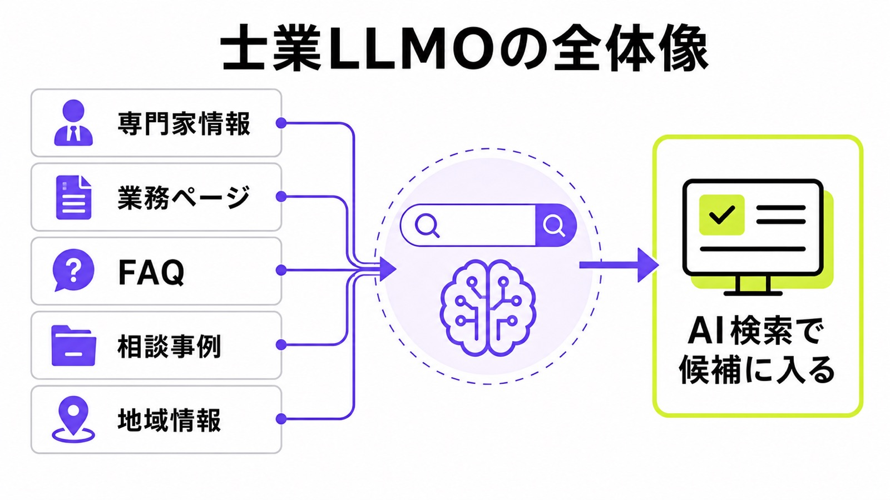
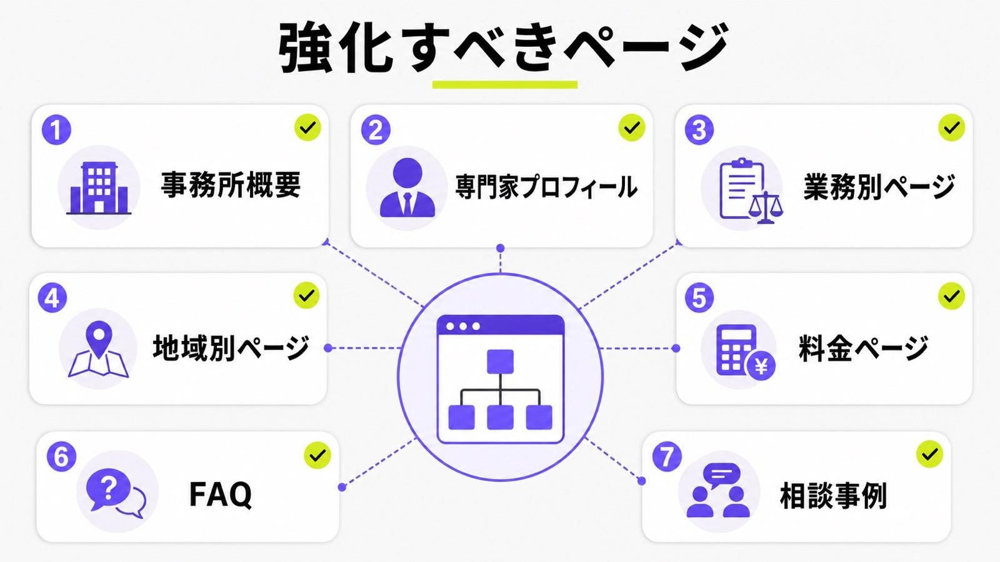
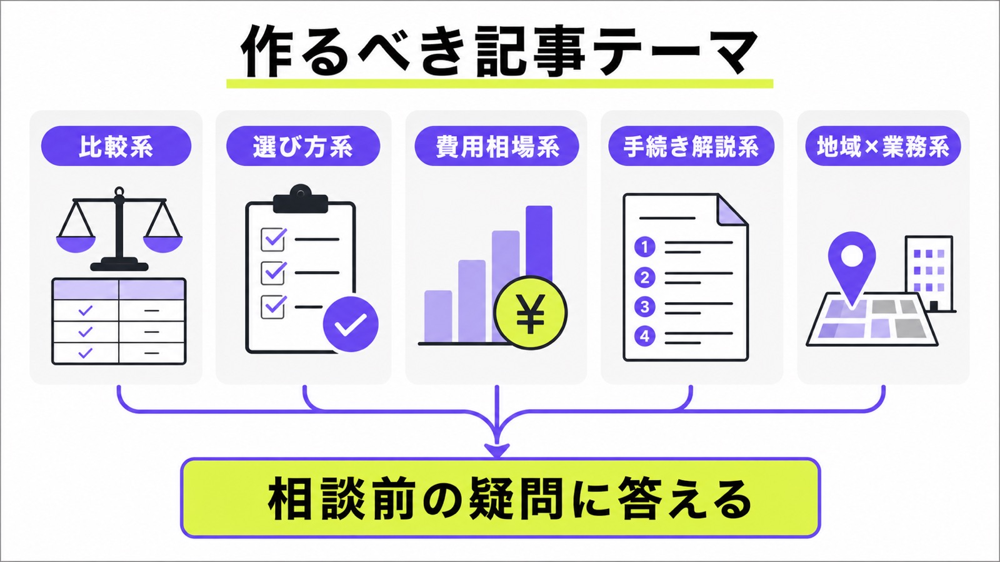
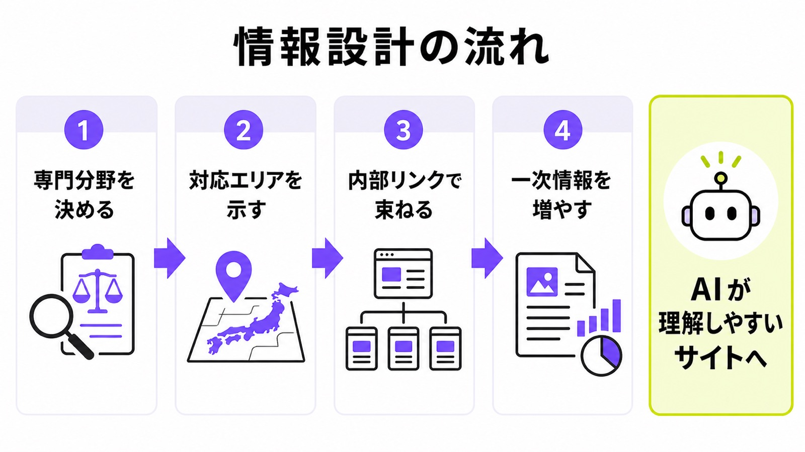
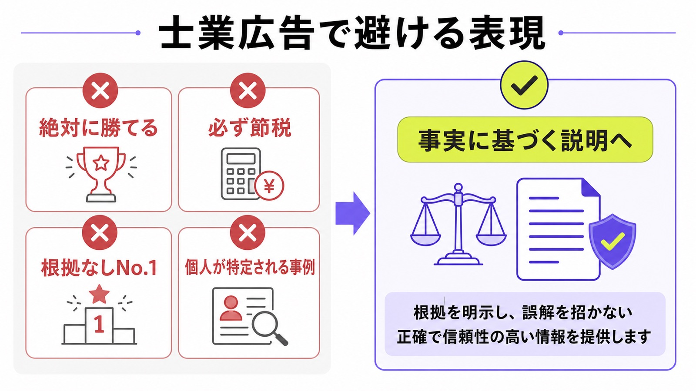
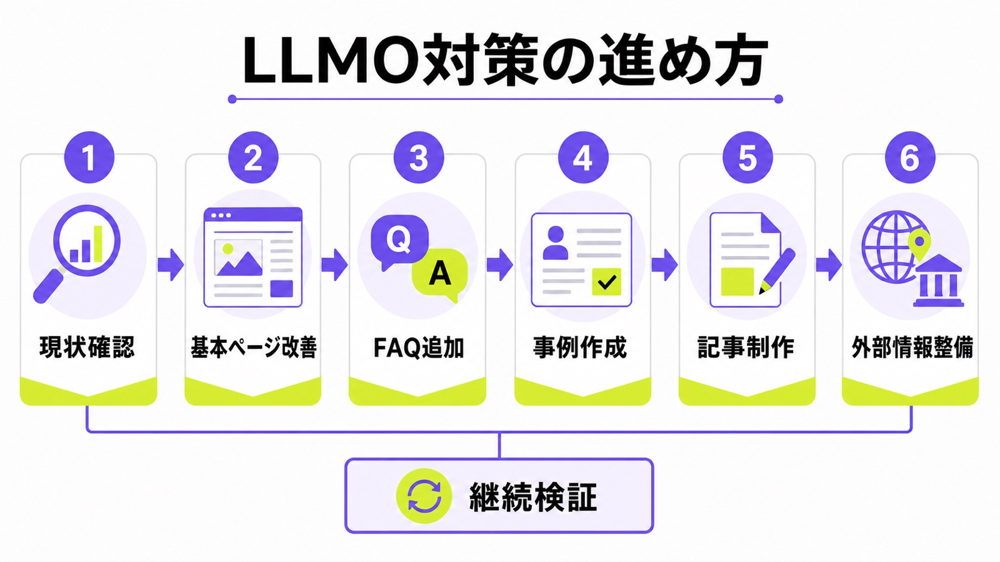

士業のLLMO対策とは？AI検索で選ばれる事務所サイトの作り方を解説

士業の集客は、検索エンジンだけを見ていればよい時代ではなくなりつつあります。
これまでは「大阪 相続 税理士」「離婚 弁護士 相談」「会社設立 司法書士」のようなキーワードでGoogle検索され、検索結果の上位に表示されることが重要でした。しかし現在は、ChatGPT、Gemini、Perplexity、GoogleのAI OverviewsやAI Modeなどに相談し、AIの回答をもとに相談先を探すユーザーも増えています。
士業のLLMO対策とは、AI検索や生成AIの回答内で、事務所名・専門家名・サービスページ・解説記事が信頼できる情報源として参照されやすい状態を作る施策です。単に記事を増やすのではなく、「どの専門家が」「どの地域で」「どの業務に強く」「どのような実績や情報を持っているのか」をAIが理解しやすい形で整える必要があります。
目次

士業のLLMO対策とは
士業のLLMO対策とは、弁護士、税理士、司法書士、行政書士、社労士などの専門家事務所が、AI検索で候補として表示されやすくなるための情報設計です。
AI検索では、ユーザーが「相続に強い税理士を教えて」「大阪で離婚問題に詳しい弁護士は？」「会社設立は司法書士と行政書士のどちらに相談すべき？」のように、自然な文章で相談します。その回答の中で自社の事務所や専門コンテンツが参照されるには、従来のSEOとは少し違う視点が必要です。
Google検索のAI機能でも、AI OverviewsやAI Modeは複雑な質問や比較検討に対してAIによる回答と関連リンクを表示します。特にAI Modeは、比較や深掘りが必要な質問に向いており、複数の関連検索を組み合わせる「query fan-out」の仕組みを使う場合があります。つまり、単一キーワードだけでなく、周辺質問や関連トピックまで含めた情報整備が重要になります。

LLMOとSEOの違い
SEOは、Googleなどの検索エンジンでページを上位表示させるための施策です。一方でLLMOは、生成AIやAI検索の回答内で、自社の情報が参照・引用・推薦されやすい状態を作る施策です。SEOが「検索結果で見つけてもらう対策」だとすれば、LLMOは「AIの回答内で候補に入る対策」といえます。
ただし、SEOとLLMOは別物として完全に切り離すべきではありません。AI検索で表示されるには、検索エンジンにページが認識されること、重要な情報がテキストとして読めること、サイト内の関連ページが内部リンクでつながっていることが土台になります。LLMO対策は、SEOを捨てる施策ではなく、SEOの基礎にAI回答で参照されるための情報設計を加える施策です。
“There are no additional requirements to appear in AI Overviews or AI Mode”
士業サイトの場合、SEOでは「相続税申告 大阪」「未払い残業代 弁護士」などのキーワード対策が中心になりやすいです。しかしLLMOでは、「どの士業に相談すべきか」「費用はいくらか」「どんな事務所を選べばよいか」「この地域ならどこが候補か」といった、相談前の意思決定に関わる質問まで対策する必要があります。
士業とLLMOの相性が良い理由
士業はLLMOと相性が良い業種です。なぜなら、相談者が最初から明確な依頼先を決めていることは少なく、多くの場合は「誰に相談すべきか」「費用はいくらか」「自分のケースは対象になるのか」といった疑問から情報収集を始めるからです。この段階の疑問は、生成AIに質問されやすいテーマです。
たとえば相続で悩んでいる人は、いきなり「大阪市北区 相続税申告 税理士」と検索するとは限りません。「親が亡くなったら最初に何をすべき？」「相続税がかかるかわからない」「税理士と司法書士のどちらに相談すべき？」とAIに聞く可能性があります。ここで自社の解説記事やサービスページが情報源として認識されれば、相談先の候補に入りやすくなります。
さらに士業は、専門性、資格、実績、地域性、相談事例が重要な業種です。AIが事務所を理解するための材料を整えやすく、プロフィール、業務ページ、FAQ、料金ページ、事例ページを充実させることで、AIに「この領域の専門家」と判断されやすい土台を作れます。
士業のLLMO対策で目指すべき状態
士業のLLMO対策で目指すべき状態は、単にAI回答に事務所名が出ることではありません。重要なのは、相談者の悩みや地域名、業務名と結びついた形で、信頼できる候補として扱われることです。
たとえば「大阪で相続税申告に強い税理士を探している」とAIに聞かれたときに、事務所名だけが出ても十分ではありません。「大阪市内で相続税申告に対応し、相続専門ページや料金表、相談事例、代表税理士のプロフィールが整っている事務所」として説明される状態が理想です。
そのためには、トップページだけを整えても足りません。事務所情報、専門家情報、業務別ページ、地域別ページ、FAQ、事例、料金、外部掲載情報まで含めて、サイト全体で一貫した専門性を示す必要があります。
士業がLLMO対策に取り組むべき理由
士業のWeb集客では、検索順位だけでなく「AIにどう認識されるか」が重要になっています。AI検索が普及すると、ユーザーは複数のサイトを一つずつ比較する前に、AIから候補や判断基準を受け取るようになります。
このとき、AIの回答に出ない事務所は、比較検討の土俵に上がる前に見落とされる可能性があります。特に士業は、相談者にとって選び方が難しい業種です。だからこそ、AIが相談者の代わりに情報を要約し、候補を出す流れと相性があります。
相談者の検索行動が変わっている
従来の検索では、ユーザーはキーワードを入力し、検索結果から複数のページを開き、比較しながら相談先を選んでいました。しかし生成AIを使うユーザーは、「こういう状況なんだけど、誰に相談すればいい？」と文章で質問します。検索行動が、キーワード入力から相談形式に変わっているわけです。
士業の相談は、そもそもユーザー側の知識が不足していることが多いです。相続で税理士が必要なのか、弁護士が必要なのか、司法書士が必要なのかを判断できない人もいます。こうしたユーザーほど、AIに最初の判断を任せやすくなります。
そのため、士業サイトでは「業務名で検索されるページ」だけでなく、「相談者が迷っている段階で読まれるページ」が必要です。相談者の疑問に答える記事やFAQを用意することで、AIが回答を作る際の情報源になりやすくなります。
士業はYMYL領域に近く、信頼性が問われやすい
士業が扱う法律、税務、労務、登記、許認可などの情報は、ユーザーの財産、権利、生活、事業に大きく影響します。そのため士業サイトでは、通常の記事以上に情報の正確性と信頼性が問われます。
Googleの検索品質評価ガイドラインでは、YMYLに関わるページはユーザーの健康、経済的安定、安全、社会全体の福祉に大きく影響する可能性があると位置づけられています。士業サイトは、まさに依頼者の財産や権利に関わる情報を扱うため、信頼性を示す情報設計が欠かせません。
“Trust is the most important member of the E-E-A-T family”
出典：Google Search Quality Rater Guidelines｜General Guidelines
LLMO対策でも、この考え方は無視できません。AIに評価されるための裏技を探すよりも、専門家として信頼される情報を、ユーザーとAIの両方が理解しやすい形で整えることが先です。
ポータルサイトや比較サイトに依存しすぎるリスクがある
士業集客では、ポータルサイトや比較サイト、口コミサイトに掲載するケースも多いです。これらは短期的な集客には有効ですが、AI検索時代には、自社サイト側の情報が弱いと、AIがポータルサイトの情報だけを参照する可能性があります。
たとえばAIが「大阪で相続に強い税理士」を回答する際、自社サイトに十分な情報がなければ、比較サイトやポータルサイト上の紹介文をもとに事務所を判断することになります。その場合、自社が本当に打ち出したい強みや専門性が正しく伝わらない可能性があります。
LLMO対策では、自社サイトを一次情報の置き場として強化することが重要です。ポータルサイトに掲載する場合でも、自社サイトに詳細なプロフィール、業務ページ、事例、料金、FAQを用意しておくことで、AIが事務所を理解するための基準を自社側に置けます。
士業サイトがAI検索で選ばれにくい原因
士業サイトは、見た目が整っていてもAIに理解されにくいケースがあります。特に多いのは、業務内容が抽象的で、専門家情報が薄く、相談者の疑問に答えるページが不足しているパターンです。
AI検索で選ばれるには、「良い事務所であること」だけでは足りません。AIが読み取れる形で、専門性、対応領域、対応エリア、実績、料金、相談方法を明確にしておく必要があります。
業務内容が抽象的すぎる
士業サイトでよくある問題が、「相続に対応」「企業法務に対応」「税務相談に対応」といった抽象的な表現で止まっていることです。人間が見れば何となく伝わりますが、AIが具体的な相談内容と結びつけるには情報が足りません。
たとえば「相続に対応」だけでは、相続税申告なのか、遺産分割協議なのか、遺言書作成なのか、相続登記なのか、家族信託なのかがわかりません。相談者の悩みは具体的なので、サイト側も具体的な業務単位に分ける必要があります。
LLMO対策では、業務ページを「大分類」だけでなく「相談内容」まで分解します。相続であれば、相続税申告、相続登記、遺産分割、遺言書、成年後見、家族信託などに分け、それぞれのページで対象者、相談の流れ、必要書類、費用、よくある質問を説明します。
専門家プロフィールが弱い
士業では、「誰が対応するのか」が非常に重要です。それにもかかわらず、プロフィールページが数行だけだったり、資格名と代表挨拶だけで終わっていたりするサイトは少なくありません。
AIが専門性を判断するには、氏名、資格、登録番号、所属団体、経歴、専門分野、相談実績、執筆・監修歴、セミナー実績、対応方針などの情報が必要です。特に士業では、実名性と資格情報が信頼性の土台になります。
プロフィールページでは、単なる自己紹介ではなく、「この専門家は何に詳しいのか」「どのような相談を多く扱っているのか」「どの地域や業種に強いのか」が伝わるように書くべきです。代表者だけでなく、所属する専門家ごとのプロフィールも用意できると、サイト全体の専門性を示しやすくなります。
相談事例や解決事例が少ない
士業のLLMO対策では、相談事例や解決事例が重要です。なぜなら事例は、事務所が実際にどのような相談に対応しているのかを示す一次情報になるからです。
たとえば「相続税申告に対応しています」と書くだけでは一般的です。しかし、「不動産を複数所有していた相続案件」「二次相続を見据えた遺産分割の相談」「期限直前の相続税申告」などの事例があれば、専門性が具体的に伝わります。
もちろん、士業の事例掲載では守秘義務や個人情報への配慮が必要です。依頼者が特定されないように、氏名、会社名、詳細な住所、具体的すぎる金額や時期は調整します。そのうえで、相談内容、対応方針、解決までの流れ、専門家としての注意点をまとめると、AIにも相談者にも役立つコンテンツになります。
FAQが不足している
AI検索は質問形式と相性が良いため、FAQが不足しているサイトは不利になりやすいです。相談者は「相続税申告はいつまで？」「初回相談は無料？」「オンライン相談はできる？」「弁護士に相談するタイミングは？」のように質問します。
FAQが整っていないと、AIがサイト内から回答に使える情報を見つけにくくなります。サービスページの下部やFAQ専用ページに、実際の相談でよく聞かれる質問を入れるべきです。
回答は、結論から書くことが重要です。「可能です」「必要です」「ケースによります」と先に答えたうえで、条件や注意点を補足します。士業のFAQでは、断定しすぎると誤解を招く場合もあるため、一般論と個別相談が必要な範囲を分けて書くことも大切です。
士業のLLMO対策で強化すべきページ
士業のLLMO対策では、ブログ記事だけを増やしても成果につながりにくいです。AIに事務所の専門性を理解してもらうには、サイト全体の基本情報と主要ページを整える必要があります。
特に重要なのは、事務所概要、プロフィール、業務別サービスページ、地域ページ、料金ページ、FAQ、相談事例です。これらのページが弱いまま記事だけを増やしても、「どの事務所が発信している情報なのか」が伝わりにくくなります。

事務所概要ページ
事務所概要ページは、AIに基本情報を伝えるための土台です。事務所名、代表者名、所在地、電話番号、営業時間、対応エリア、相談方法、アクセス、所属団体などを明確に記載します。
特に士業では、資格名や登録番号を掲載することが重要です。弁護士であれば所属弁護士会、税理士であれば所属税理士会、司法書士であれば所属司法書士会、社労士であれば所属社労士会など、専門家としての確認情報をきちんと出します。
また、Googleビジネスプロフィールや外部媒体に掲載している情報と、事務所サイトの情報を一致させることも大切です。住所、電話番号、営業時間、事務所名の表記が媒体ごとに違うと、AIや検索エンジンが同一事務所として認識しにくくなる可能性があります。
専門家プロフィールページ
専門家プロフィールページは、士業サイトの中でも特に重要です。士業サービスは無形商材であり、相談者は「この人に相談して大丈夫か」を重視します。AIも同じように、発信者の専門性や信頼性を判断する材料を必要とします。
プロフィールには、氏名、顔写真、資格、登録番号、所属団体、経歴、得意分野、対応実績、執筆・監修歴、セミナー登壇歴などを掲載します。可能であれば、なぜその分野に注力しているのか、どのような相談者を支援してきたのかも書くと、単なる肩書き以上の専門性が伝わります。
注意点として、プロフィールは過度に美化しないことです。「圧倒的実績」「地域No.1」「絶対に解決」などの表現ではなく、事実に基づく経歴や実績を具体的に示す方が、士業の信頼性には合っています。
業務別サービスページ
業務別サービスページは、士業のLLMO対策の中心になります。トップページにすべての業務を詰め込むのではなく、相談内容ごとに個別ページを作ります。
たとえば税理士であれば、相続税申告、法人顧問、創業融資、記帳代行、事業承継などに分けます。弁護士であれば、離婚、相続、交通事故、企業法務、債務整理、労働問題などに分けます。司法書士であれば、相続登記、会社設立、不動産登記、成年後見、債務整理などが考えられます。
各ページでは、対象となる相談者、よくある悩み、依頼するメリット、手続きの流れ、必要書類、費用、対応エリア、FAQ、関連事例まで入れると強くなります。AIが「この事務所はこの業務に詳しい」と判断するには、業務ごとの情報量と具体性が必要です。
地域別ページ
地域密着型の士業事務所では、地域別ページも有効です。士業の相談は「近くの専門家に相談したい」「地元の事情に詳しい人に頼みたい」というニーズが強いため、地域名との相性が高いです。
ただし、「大阪市の相続税申告」「堺市の相続税申告」「豊中市の相続税申告」のように、本文をほとんど変えずに地域名だけを差し替えるページ量産は避けるべきです。薄い地域ページはユーザーの役に立たず、AIにとっても独自性が低い情報になります。
地域別ページを作るなら、その地域からの相談傾向、アクセス方法、対応実績、周辺エリア、オンライン相談の可否、地域特有の手続き上の注意点などを入れます。地域名を入れるだけではなく、「その地域の相談者にとって本当に役立つページ」にすることが重要です。
料金ページ
士業サイトでは、料金ページもLLMO対策上の重要ページです。相談者は依頼前に費用感を知りたいと考えますし、AIにも「費用相場」や「相談前に確認すべき点」を質問します。
料金を明記できる業務であれば、基本料金、追加費用が発生するケース、見積もりが必要なケースを分けて記載します。すべてを固定料金で書けない場合でも、「案件によって変動します」だけで終わらせず、費用が変わる要因を説明することが大切です。
たとえば相続税申告なら、遺産総額、不動産の数、相続人の数、申告期限までの期間などで費用が変わります。弁護士業務なら、着手金、報酬金、実費、日当、相談料などを分けて説明します。こうした情報は相談者の不安を減らし、AIにも参照されやすい実用的な情報になります。
士業のLLMO対策で作るべき記事テーマ
士業のLLMO対策では、記事テーマの選び方が重要です。検索ボリュームだけを見て記事を作るのではなく、AIに質問されやすいテーマを狙う必要があります。
特に有効なのは、比較系、選び方系、費用相場系、手続き解説系、地域×業務系の記事です。これらは相談者の意思決定に近く、AIが回答を作るときにも使いやすい情報になります。

比較系記事
比較系記事は、LLMO対策と非常に相性が良いです。相談者は、どの専門家に相談すべきかを最初から理解しているわけではありません。そのため、「税理士と会計士の違い」「司法書士と行政書士の違い」「弁護士と司法書士の違い」のような比較テーマは需要があります。
比較系記事では、単に違いを並べるだけでは不十分です。相談内容ごとに、どちらへ相談すべきかを具体的に示す必要があります。たとえば相続なら、相続税申告は税理士、相続登記は司法書士、相続トラブルは弁護士というように、ユーザーが判断しやすい形で説明します。
さらに、自社の業務につなげる導線も必要です。ただし、無理に自社へ誘導しすぎると信頼性が落ちます。「このケースでは当事務所で対応可能」「このケースでは弁護士への相談が必要」と正直に分けた方が、士業サイトとしての信頼性は高くなります。
選び方系記事
選び方系記事は、相談先を検討しているユーザーに刺さりやすいテーマです。「相続に強い税理士の選び方」「離婚問題に強い弁護士の選び方」「会社設立に強い司法書士の選び方」などが該当します。
選び方系記事では、チェックポイントを具体的に書きます。資格を持っているかだけでなく、その分野の相談実績、料金の明確さ、初回相談の対応、説明のわかりやすさ、地域対応、オンライン相談の可否など、ユーザーが実際に比較できる項目に落とし込みます。
また、自社を過度に持ち上げるのではなく、客観的な判断基準として書くことが重要です。結果的に、その基準を満たすページやプロフィールを自社サイト内に用意しておけば、記事からサービスページへの導線が自然に生まれます。
費用相場系記事
費用相場系記事は、問い合わせ前の不安を解消するために重要です。士業に相談するユーザーは、「高そう」「いくらかかるかわからない」「相談だけで費用が発生するのでは」と不安を感じています。
費用相場の記事では、金額だけでなく、費用が変わる理由を説明します。相続税申告なら財産額や不動産の数、弁護士業務なら争いの有無や手続きの進行度、司法書士業務なら登記内容や必要書類、社労士業務なら従業員数や対応範囲によって費用が変わります。
料金に幅がある場合は、「一律でいくら」と断定するよりも、費用が上がるケース、下がるケース、見積もり時に確認すべき項目を示す方が実用的です。AI検索でも、こうした具体的な説明は回答に使われやすくなります。
手続き解説系記事
手続き解説系記事は、士業の専門性を示しやすいテーマです。相続手続き、会社設立、建設業許可、離婚調停、労務トラブル対応、就業規則作成など、流れを説明できる業務は多くあります。
手続き解説では、ステップ形式で全体像を見せることが重要です。相談者は、何から始めればよいのか、どの書類が必要なのか、どれくらい時間がかかるのか、どこで専門家に相談すべきなのかを知りたがっています。
記事内では、一般的な流れと注意点を分けて説明します。さらに「この段階で専門家に相談すべき理由」を入れることで、単なる情報提供で終わらず、問い合わせにつながる導線を作れます。
地域×業務系記事
地域×業務系記事は、地域密着の士業事務所に向いています。「大阪で相続税申告を税理士に相談するなら」「神戸で会社設立に強い司法書士を探す方法」「京都で労務相談に対応できる社労士の選び方」などです。
このタイプの記事では、地域名を入れるだけでは弱いです。地域の相談者が知りたい情報、アクセス、対応エリア、地元企業や個人から多い相談内容、オンライン相談との使い分けなどを入れる必要があります。
また、地域ページと記事の役割を分けることも大切です。地域ページはサービスへの問い合わせ導線、地域×業務の記事は比較検討や情報収集に向けた解説として作ると、サイト内の導線が自然になります。
士業のLLMO対策で重要な情報設計
LLMO対策では、単発の記事制作よりも情報設計が重要です。AIはページ単体だけでなく、サイト全体の文脈から「この事務所は何に強いのか」を判断します。
士業サイトでは、専門分野、対応エリア、プロフィール、実績、料金、FAQ、事例、外部評価を一貫して整える必要があります。情報がバラバラだと、AIにも相談者にも強みが伝わりません。

専門分野を絞って見せる
士業事務所の中には、対応できる業務をすべて並べているサイトがあります。もちろん実務上は幅広く対応できる場合もありますが、Web集客やLLMO対策では「何に強い事務所なのか」が明確でないと不利です。
たとえば「相続に強い税理士」「会社設立に強い司法書士」「離婚問題に強い弁護士」「労務トラブルに強い社労士」のように、主力分野を明確に打ち出します。そのうえで、関連業務を補助的に見せると、事務所の専門性が伝わりやすくなります。
AIにとっても、専門分野が明確なサイトは認識しやすいです。トップページ、プロフィール、業務ページ、記事、事例で同じ専門テーマが一貫して出ていれば、「この事務所はこの領域に詳しい」と判断されやすくなります。
対応エリアを明確にする
士業の相談は、全国対応と地域密着のどちらで打ち出すかによって情報設計が変わります。地域密着なら、都道府県、市区町村、周辺エリアを明確に記載します。全国対応なら、オンライン相談や対応可能な手続き範囲を具体的に説明します。
AI検索では、「大阪で相続税申告に強い税理士」「東京で離婚に強い弁護士」のように地域名を含む質問が発生しやすいです。そのときに対応エリアが曖昧だと、候補に入りにくくなります。
対応エリアは、トップページ、事務所概要、業務ページ、地域ページ、FAQで一貫させます。「大阪府全域」「大阪市、堺市、豊中市、吹田市に対応」「オンライン相談は全国対応」など、ユーザーが判断しやすい表現にします。
内部リンクで専門性のまとまりを作る
LLMO対策では、サイト内のページ同士を適切につなぐことも重要です。主力業務ページを中心に、関連する記事、FAQ、料金、事例を内部リンクでつなぐと、AIもユーザーも情報を理解しやすくなります。
たとえば「相続税申告」の業務ページがあるなら、相続税申告の費用記事、必要書類の記事、期限の記事、相談事例、FAQ、代表税理士のプロフィールを内部リンクでつなぎます。これにより、サイト内で相続税申告に関する情報群ができます。
AIにとっても、関連ページがまとまっているサイトはテーマを理解しやすくなります。記事を単独で放置するのではなく、主力業務ページを中心に関連コンテンツを束ねる設計が必要です。
一次情報を増やす
LLMO対策では、他サイトの焼き直しではなく、事務所独自の一次情報を増やすことが重要です。AIは一般論をまとめるのが得意なので、どこにでもある説明だけでは差別化しにくくなります。
士業サイトで使える一次情報には、実際によくある相談、匿名化した相談事例、地域の相談傾向、専門家としての見解、料金の考え方、相談時によくある誤解、依頼前に準備すべきものなどがあります。
たとえば「相続税申告の流れ」を書くだけでは一般的ですが、「大阪市内の不動産を含む相続で相談が多いケース」「期限直前の相談で起きやすい問題」「初回相談時に持参してもらう資料」まで書けば、独自性が出ます。AIに選ばれるには、こうした一次情報の蓄積が強みになります。
士業のLLMO対策で注意すべき広告表現
士業のLLMO対策では、目立つ表現よりも正確な表現が重要です。AI検索で選ばれたいからといって、実績を大きく見せたり、結果を保証するような表現を使ったりすると、信頼性を損なう可能性があります。
弁護士、税理士、司法書士などは、それぞれ広告表現に関するルールや指針があります。LLMO対策でも、Webサイト、記事、FAQ、事例、比較ページの表現が広告として見られる可能性を前提にするべきです。

結果を保証する表現は避ける
士業サイトでは、「必ず勝てる」「絶対に節税できる」「100％許可が取れる」「必ず解決できる」といった表現は避けるべきです。相談者に誤解を与えるだけでなく、士業としての信頼性も下がります。
LLMO対策では、強い言葉でAIに印象づけるよりも、事実に基づく説明を積み上げる方が重要です。たとえば「相続税を必ず安くします」ではなく、「財産評価や特例適用の可否を確認し、適正な申告を支援します」と書く方が自然です。
相談者は不安を抱えているため、断定的な成果保証は一見魅力的に見えます。しかし士業のサービスは個別事情によって結果が変わります。だからこそ、できること、できないこと、個別判断が必要なことを分けて書く必要があります。
実績やNo.1表現は根拠を明確にする
「地域No.1」「相談実績No.1」「圧倒的実績」などの表現は、根拠がなければ避けるべきです。根拠のない比較優位表現は、ユーザーに誤認を与える可能性があります。
使うなら、調査主体、調査期間、調査範囲、調査方法を明示する必要があります。ただし士業サイトでは、無理にNo.1表現を使うよりも、具体的な実績を淡々と示す方が信頼されやすいです。
たとえば「相続税申告に強い」と書くだけでなく、「相続税申告を中心に対応」「不動産を含む相続の相談が多い」「初回相談で必要書類の確認から対応」など、相談者が判断できる材料を出します。AIにとっても、根拠のある具体情報の方が扱いやすくなります。
職種ごとの広告ルールを確認する
士業の広告は、職種ごとに確認すべきルールが異なります。弁護士、税理士、司法書士、行政書士、社労士では、扱える業務や広告表現の注意点が違うため、同じLLMO記事でも表現の置き方を変える必要があります。
たとえば税理士の場合、広告は原則自由とされる一方で、事実に基づかない広告や品位・信用を損なう広告は避けるべきです。司法書士の場合も、勝訴率や顧問先・依頼者の表示、受任中または過去に取り扱った事件の表示などには注意が必要です。
「事実に基づかない広告はもちろんのこと、品位や信用を損なう虞のある広告は行ってはならない」
LLMO対策では、強い表現で目立つことよりも、資格者として信頼を積み上げることが重要です。専門性、料金、相談方法、対応範囲、事例を正確に示し、誤認を招く表現を避けることで、AIにもユーザーにも信頼されやすいサイトになります。
事例掲載では守秘義務と個人情報に配慮する
相談事例や解決事例はLLMO対策に有効ですが、士業では守秘義務と個人情報への配慮が欠かせません。実名、会社名、住所、細かい時期、金額、家族構成などをそのまま出すと、依頼者が特定される可能性があります。
事例を掲載する場合は、匿名化したうえで、相談内容、対応方針、手続きの流れ、専門家としての注意点を中心に書きます。成果を強調しすぎるのではなく、どのような課題に対して、どのような支援を行ったのかを説明する方が安全です。
また、個別案件の結果を一般化しすぎないことも重要です。「同じようなケースなら必ず同じ結果になる」と受け取られる表現は避けます。記事内でも、最終判断には個別事情の確認が必要であることを自然に伝えるべきです。
士業のLLMO対策の具体的な進め方
士業のLLMO対策は、いきなり記事を量産するのではなく、現状確認から始めるべきです。AI検索で現在どう表示されているのか、競合はどのように扱われているのか、自社サイトに何が不足しているのかを確認します。
そのうえで、基本ページの改善、業務ページの強化、FAQ追加、事例作成、記事制作、外部情報の整備という順番で進めると、無駄が少なくなります。

AI検索で現在の表示状況を確認する
最初に行うべきことは、自社名、代表者名、業務名、地域名を組み合わせてAI検索してみることです。ChatGPT、Gemini、Perplexity、GoogleのAI検索などで、どのように表示されるかを確認します。
質問例としては、「〇〇市で相続に強い税理士は？」「〇〇事務所はどんな事務所？」「大阪で会社設立に強い司法書士を探す方法は？」「離婚問題に強い弁護士の選び方は？」などがあります。これらの質問に対して、自社名が出るか、競合名が出るか、どのサイトが参照されているかを見ます。
ここで大事なのは、1回の回答だけで判断しないことです。AIの回答は質問文やタイミングによって変わるため、複数の聞き方で確認します。自社がまったく出ない場合は、AIが参照できる情報が不足している可能性があります。
競合事務所の情報設計を確認する
次に、AI回答に出てくる競合事務所のサイトを確認します。どのページが強いのか、どの業務を打ち出しているのか、プロフィールや事例がどれくらい充実しているのかを見ます。
特に確認すべきなのは、トップページ、業務ページ、プロフィール、料金ページ、FAQ、相談事例、地域ページです。AI回答に出る事務所は、これらの情報が比較的整っていることがあります。
ただし、競合の真似をするだけでは不十分です。自社が勝てる専門分野、地域、対応スピード、相談体制、料金のわかりやすさ、実績、一次情報を見つけ、それをサイト全体に反映する必要があります。
不足しているページを優先順位順に改善する
現状確認ができたら、不足しているページを洗い出します。多くの士業サイトでは、プロフィール、FAQ、料金、事例、地域ページのどれかが不足しています。
優先順位としては、まずトップページ、事務所概要、代表者プロフィール、主力業務ページ、料金ページ、FAQを整えます。この土台が弱いままブログ記事を増やしても、問い合わせにはつながりにくいです。
次に、相談事例や比較記事、費用相場記事、手続き解説記事を増やします。記事は主力業務ページへ内部リンクし、サービスページ側からも関連する記事やFAQへリンクします。これにより、サイト内で専門テーマのまとまりができます。
AIに聞かれやすい質問から記事を作る
記事制作では、検索ボリュームだけでなく、AIに聞かれやすい質問を起点にします。たとえば「相続税申告 税理士 費用」だけでなく、「相続税申告は税理士に依頼すべきですか？」「相続税がかかるかわからない場合はどうすればいいですか？」のような質問を記事化します。
質問起点の記事では、見出しも質問形式にすると効果的です。回答は結論から書き、その後に理由、具体例、注意点、相談すべきケースを説明します。AIが回答に使いやすく、ユーザーにも読みやすい形式になります。
また、記事の最後には関連する業務ページや無料相談ページへの導線を置きます。ただし、本文中で過度に営業色を出す必要はありません。役立つ情報を提供したうえで、「個別の判断が必要な場合は相談できる」と自然に案内する方が、士業サイトには合っています。
士業のLLMO対策で成果を出すチェックリスト
士業のLLMO対策では、やるべきことが多く見えます。しかし実際には、基本情報、専門性、コンテンツ、外部評価の4つを順番に確認すれば進めやすくなります。
重要なのは、記事数ではなく、AIとユーザーが判断できる情報があるかどうかです。以下の項目を確認し、不足している部分から改善します。
基本情報のチェック
まず確認すべきなのは、事務所の基本情報です。事務所名、代表者名、所在地、電話番号、営業時間、対応エリア、相談方法、アクセス情報が明確に書かれているかを見ます。
次に、資格情報を確認します。士業では、資格名、登録番号、所属団体、専門家の氏名が重要です。これらが曖昧なサイトは、ユーザーにもAIにも信頼されにくくなります。
また、Googleビジネスプロフィール、ポータルサイト、SNS、外部メディアに掲載されている事務所情報との一貫性も確認します。表記ゆれや古い住所、営業時間のズレがある場合は修正します。
専門性のチェック
専門性のチェックでは、主力業務が明確かどうかを確認します。「幅広く対応」だけではなく、どの相談に強いのか、どのような依頼が多いのか、どの地域や業種に対応しているのかを見ます。
プロフィールページでは、経歴、専門分野、対応実績、執筆・監修歴、セミナー実績などを確認します。代表者や所属専門家の情報が薄い場合は、優先的に強化すべきです。
業務ページでは、対象者、相談内容、手続きの流れ、料金、FAQ、事例へのリンクがあるかを見ます。ページが短すぎる場合は、AIが専門性を判断する材料が不足している可能性があります。
コンテンツのチェック
コンテンツ面では、相談者が実際に聞く質問に答えられているかを確認します。比較系、選び方系、費用相場系、手続き解説系、地域×業務系の記事があるかを見ます。
記事の内容が一般論だけで終わっていないかも重要です。他サイトにもある説明だけでは、AIに選ばれる理由が弱くなります。事務所独自の経験、相談事例、地域性、専門家としての見解を入れます。
また、古い記事の更新も必要です。法律、税制、制度、料金、手続きは変わることがあります。士業サイトでは、古い情報を放置すると信頼性を損なうため、定期的に内容を見直します。
外部評価のチェック
LLMO対策では、自社サイトだけでなく外部からの評価も重要です。Googleビジネスプロフィール、専門家検索サイト、士業団体の会員情報、メディア掲載、セミナー情報、監修実績などを確認します。
AIは、外部サイトに掲載された情報を参照することもあります。そのため、自社サイトと外部サイトで事務所名、代表者名、住所、電話番号、対応業務が一致しているかを確認します。
外部評価を増やすために、無理な口コミ依頼や過度な宣伝をする必要はありません。セミナー登壇、専門記事の監修、地域メディアへの掲載、業界団体のプロフィール整備など、事実に基づく露出を増やすことが大切です。
士業がLLMO対策を依頼する場合の選び方
LLMO対策を外部に依頼する場合は、単に記事を書ける会社ではなく、士業の集客構造と表現リスクを理解している会社を選ぶ必要があります。
士業のLLMO対策は、一般的なSEO記事制作とは異なります。専門性、広告表現、相談導線、地域性、プロフィール設計、事例設計まで含めて見られるかが重要です。
士業の広告表現を理解しているか
外部会社を選ぶ際に最も注意すべきなのは、士業の広告表現を理解しているかどうかです。Web集客に強くても、士業特有の表現リスクを理解していない会社に依頼すると、誇大表現や誤認を招く表現が入る可能性があります。
「必ず勝てる」「絶対に節税できる」「地域No.1」「最安保証」のような表現を安易に提案する会社は避けた方が安全です。成果を強く見せることよりも、事実に基づいて信頼性を高める設計ができる会社を選ぶべきです。
依頼前には、過去に士業サイトの制作や記事作成を行った実績があるか、表現チェックの体制があるか、専門家監修を前提に進められるかを確認します。
SEOとLLMOの両方を理解しているか
LLMO対策は、SEOを無視して進めるものではありません。検索エンジンにページが認識されない状態では、AI検索にもつながりにくくなります。
そのため、SEOの基礎を理解せずに「AIに出す方法」だけを売る会社には注意が必要です。
見るべきなのは、キーワード設計、サイト構造、内部リンク、業務ページ設計、FAQ設計、プロフィール設計、記事制作を一体で提案できるかです。LLMOという言葉だけではなく、実務に落とし込める会社を選ぶべきです。
記事制作だけでなく情報設計まで対応できるか
士業のLLMO対策では、記事を何本作るかよりも、どのページをどう配置するかが重要です。主力業務ページ、地域ページ、FAQ、料金ページ、プロフィール、事例をどうつなぐかで成果が変わります。
記事制作だけを依頼すると、サイト内にバラバラの記事が増えるだけになる可能性があります。必要なのは、事務所の強みを明確にし、相談者の検索行動やAIへの質問をもとにページ設計することです。
依頼先を選ぶときは、「どの記事を書きますか？」だけでなく、「どのページを強化すべきか」「業務ページと記事をどうつなぐか」「AI検索でどの質問を取りに行くか」まで提案できるかを確認します。
AI検索での表示状況を検証できるか
LLMO対策では、施策後にAI検索での表示状況を確認することが必要です。どの質問で自社が出るのか、どの質問では競合が出るのか、AIが自社をどのように説明しているのかを定期的に確認します。
ただし、AI回答は常に固定ではありません。質問文、タイミング、利用するAIサービスによって回答が変わります。そのため、順位のように単純に測るのではなく、複数の質問パターンで傾向を見ることが重要です。
依頼先が、記事納品だけで終わるのではなく、AI検索での見え方、問い合わせ導線、コンバージョンまで確認できるなら、長期的な改善につながりやすくなります。
士業のLLMO対策に関するよくある質問
士業のLLMO対策は新しいテーマのため、何から始めればよいかわからない事務所も多いです。ここでは、よくある疑問に回答します。
LLMO対策は特別な裏技ではありません。基本情報を整え、専門性を伝え、相談者の疑問に答えるページを作り、AIとユーザーの両方に理解されやすいサイトにすることが本質です。
士業にもLLMO対策は必要ですか？
必要です。特に、Web経由の問い合わせを増やしたい士業事務所にとって、LLMO対策は今後重要になります。相談者がAIに相談先を聞くようになると、AI回答に出るかどうかが比較検討の入口に影響するためです。
ただし、すべての士業事務所が今すぐ大規模なLLMO対策を行う必要はありません。まずは、事務所情報、プロフィール、主力業務ページ、FAQ、料金、事例を整えることから始めるべきです。
特に地域密着型の士業事務所は、地域名と業務名を組み合わせた情報設計が重要です。「どの地域で、どの業務に対応しているのか」を明確にするだけでも、AIに理解されやすい土台ができます。
SEO対策だけでは不十分ですか？
SEO対策は今後も重要です。検索エンジンにページを正しく認識させ、ユーザーに役立つページを作ることは、AI検索時代でも土台になります。
ただし、従来のSEOだけでは対応しきれない部分もあります。AI検索では、ユーザーがキーワードではなく文章で質問します。そのため、記事やページも「質問に答える設計」「比較検討に使える設計」「相談者の意思決定を助ける設計」が必要です。
つまり、SEOを捨てるのではなく、SEOの土台にLLMOの視点を加えることが重要です。検索順位を狙うページと、AIに参照されやすい質問回答型コンテンツを組み合わせるべきです。
士業のLLMO対策は何から始めるべきですか？
最初に取り組むべきなのは、基本ページの改善です。トップページ、事務所概要、代表者プロフィール、主力業務ページ、料金ページ、FAQを確認し、不足情報を補います。
次に、AI検索で自社や競合がどう表示されるかを確認します。自社名、代表者名、地域名、業務名を組み合わせて質問し、AIがどの情報を参照しているかを見ます。
そのうえで、相談者がよく聞く質問を記事化します。比較系、選び方系、費用相場系、手続き解説系の記事を作り、主力業務ページへ内部リンクします。この順番で進めると、サイト全体の専門性が高まりやすくなります。
広告規制がある士業でもLLMO対策はできますか？
できます。ただし、広告表現には注意が必要です。虚偽、誇大、誤認を招く表現、結果を保証する表現、根拠のないNo.1表現は避けるべきです。
LLMO対策で重要なのは、過激な訴求ではなく、正確で信頼できる情報を整えることです。資格、登録番号、所属団体、対応業務、料金、FAQ、事例、専門家プロフィールを事実に基づいて掲載するだけでも、AIに理解されやすくなります。
士業ごとに広告ルールや指針があるため、弁護士、税理士、司法書士、社労士、行政書士など、それぞれのルールを確認したうえでコンテンツを作ることが大切です。
士業のLLMO対策は自分でできますか？
基本的な対策は自分でもできます。事務所情報を整える、プロフィールを詳しくする、FAQを追加する、料金ページをわかりやすくする、相談事例を匿名化して掲載する、といった施策は自社でも進められます。
一方で、サイト全体の情報設計、記事テーマの選定、内部リンク設計、AI検索での表示確認、広告表現の管理まで行う場合は、外部支援を使う価値があります。特に競合が強い地域や業務では、場当たり的な記事制作だけでは成果につながりにくいです。
自社で始めるなら、まずは主力業務を1つ決め、その業務に関するページ、FAQ、料金、事例、関連記事を集中的に整えるのがおすすめです。すべての業務を一気に対策するより、勝ちやすい領域から始める方が現実的です。
まとめ：士業のLLMO対策は「AIに信頼される情報設計」が重要
士業のLLMO対策は、AI検索で事務所名を出すための小手先のテクニックではありません。相談者とAIの両方に対して、「誰が」「どの地域で」「どの業務に」「どのような実績と方針で対応しているのか」をわかりやすく伝える情報設計です。
士業は、専門性と信頼性が強く問われる業種です。だからこそ、プロフィール、資格情報、登録番号、所属団体、業務ページ、料金、FAQ、相談事例、地域情報を丁寧に整えることが、LLMO対策の土台になります。
従来のSEOでは、検索順位を上げてクリックを獲得することが中心でした。しかしAI検索時代には、ユーザーがサイトに訪問する前に、AIの回答内で比較検討が始まります。その段階で候補に入るには、AIが参照しやすい正確な情報を自社サイトに蓄積しておく必要があります。
まずは、主力業務を1つ決め、その業務についてプロフィール、サービスページ、FAQ、料金、事例、関連記事を整えることから始めるべきです。士業のLLMO対策は、記事を量産することではなく、専門家として信頼される情報を積み上げることです。
参考：Google Search Central｜AI features and your website
参考：Google Search Quality Rater Guidelines｜General Guidelines